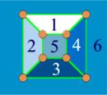

Problem K
Count the Faces
Input: standard input
Output: standard output
Time Limit:
2 seconds
A
planer graph is defined as follows
Definition A planer graph is one that can be drawn on a plane in such a way that there are no “edge crossings,” i.e. edges intersects only at their common vertices.
|  |
|
Figure:
A
planer graph |
The figure above shows a
planer graph. The six different faces of the graph are colored with different colors and are also numbered from 1 to 6. You will have
to count the number of faces of a given planer graph.
Input
The input contains several sets of inputs. Each set of input contains two integers N, E in the first line, where N denotes the number of nodes of the graph and E denotes the number of edges. The next E lines contain the description of E edges of a planer graph. Each edge description contains two case sensitive English alphabets n1 and n2, which indicates that vertex n1, and n2 are connected by an edge.
Input is terminated by end of file.
Output
For each set of input print the number of faces in that graph in a single line.
Sample Input:
Sample
Output:
“When you are both brilliant and honest,
others get the benefit of your brilliance.
But when you are only brilliant, your
brilliance only helps you.”